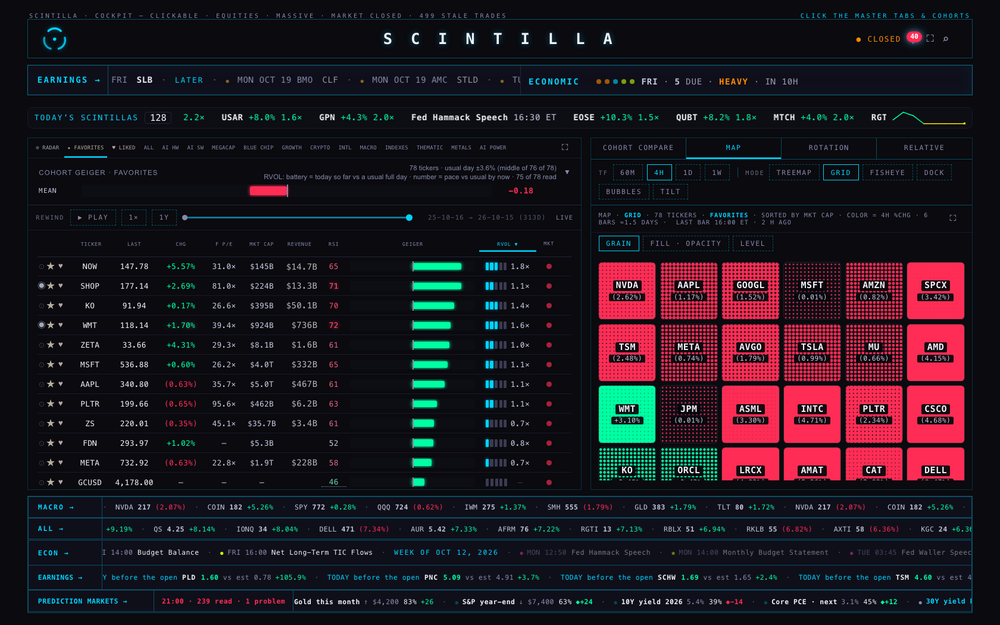
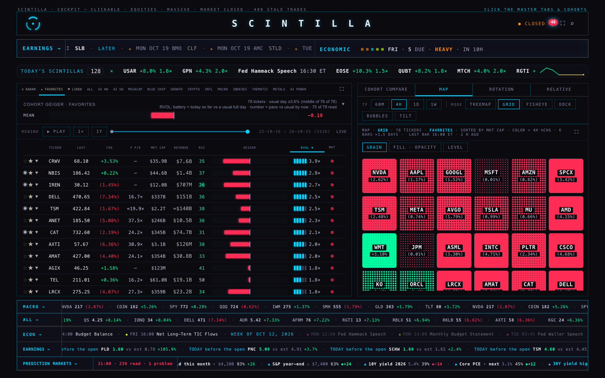
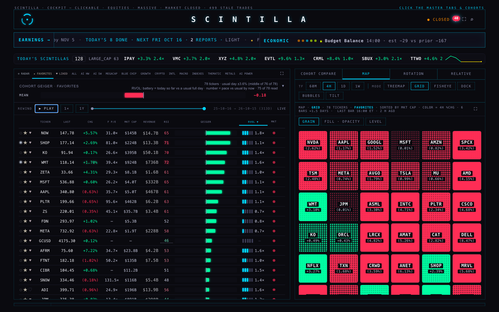
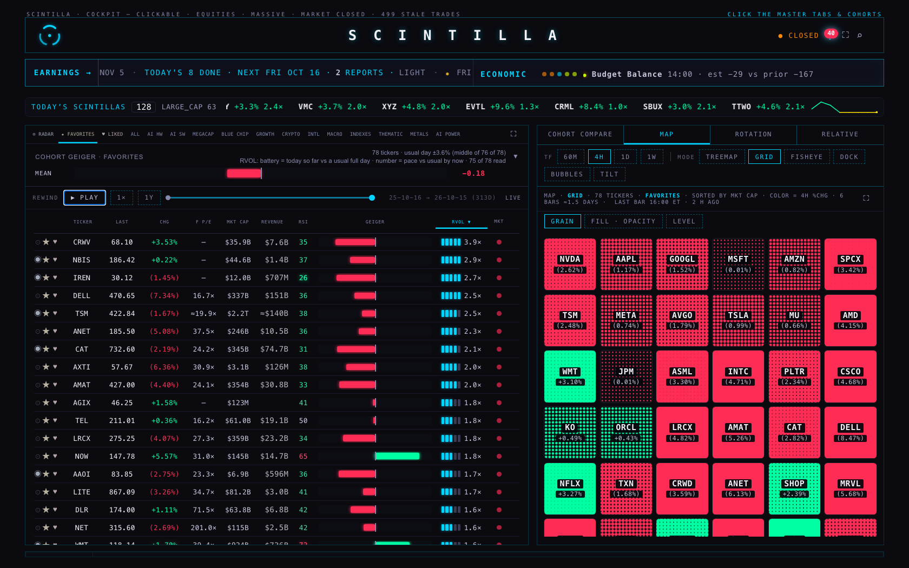
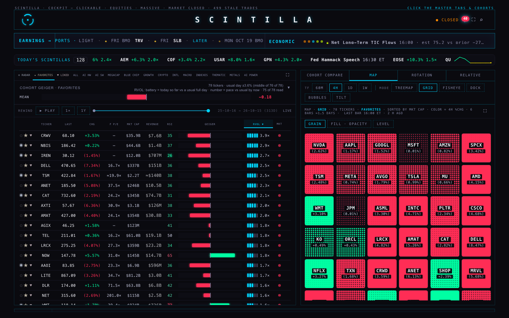

Branch hub/rv1-board-sort-20261015 from origin/hub/release-20260923 @7b66061 (the live index.html); the fix is 22d6555.
Headless Chrome (playwright-core 1.62.1, no visible window), 15 Oct 2026 21:10–21:38 ET, 1680 × 1050 unless named. BEFORE = live scintillahub.ai.
AFTER = this branch's index.html served as scintillahub.ai, reading the same live data. Every request other than a read was answered locally; the page attempted none
(0 non-GET requests attempted across the runs). Not deployed: Alan sees this first.
Steps on both: FAVORITES, click RVol (high → low), drag the rewind's thumb a little to the left (a real drag), press ↻ LIVE. No other click.


Before, the RVol order came back only with the next 45 s pull: 36 s after ↻ LIVE on the first run, and by the read 50 s later on this one (A4: 0 wrong-way steps). After, it is right at once and stays right.
Steps on both: still sorted by RVol, press ▶ PLAY on the rewind, after 3 s press Esc. While the replay plays the board ranks by the replayed Geiger (by design)
and the RVol header is hidden (motion mode: display:none measured during the replay), so the RVol order can only come back on the way out.


Live page, before any change. Click RVol once, twice, then wait 65 s without clicking (one or two 45 s pulls). "In order" = the printed numbers never step the wrong way and every dash is below every number, over the whole board. The sort is shared by the tabs, so ALL opened already sorted RVol ▼ and its first click turned it.
| read | header | numbered / rows | in order | pulls so far | first 15 as drawn (name · number beside the battery) |
|---|---|---|---|---|---|
| FAVORITES: after click #1 | RVol ▼ | 75 / 78 | yes | 1 | CRWV 3.9× · NBIS 2.9× · IREN 2.7× · DELL 2.5× · TSM 2.5× · ANET 2.3× · CAT 2.1× · AXTI 2.0× · AMAT 2.0× · AGIX 1.8× · TEL 1.8× · LRCX 1.8× · NOW 1.8× · AAOI 1.7× · LITE 1.7× |
| FAVORITES: after click #2 | RVol ▲ | 75 / 78 | yes | 1 | ZS 0.7× · META 0.7× · MELI 0.7× · FDN 0.8× · TSLA 0.8× · GOOGL 0.8× · NU 0.9× · ON 0.9× · ZETA 1.0× · FTNT 1.0× · QCOM 1.0× · AMZN 1.0× · VST 1.0× · MSTR 1.0× · CBRS 1.0× |
| FAVORITES: 65 s later, no click (after click #2) | RVol ▲ | 75 / 78 | yes | 2 | ZS 0.7× · META 0.7× · MELI 0.7× · FDN 0.8× · TSLA 0.8× · GOOGL 0.8× · NU 0.9× · ON 0.9× · ZETA 1.0× · FTNT 1.0× · QCOM 1.0× · AMZN 1.0× · VST 1.0× · MSTR 1.0× · CBRS 1.0× |
| FAVORITES: after click #3 | RVol ▼ | 75 / 78 | yes | 2 | CRWV 3.9× · NBIS 2.9× · IREN 2.7× · DELL 2.5× · TSM 2.5× · ANET 2.3× · CAT 2.1× · AXTI 2.0× · AMAT 2.0× · AGIX 1.8× · TEL 1.8× · LRCX 1.8× · NOW 1.8× · AAOI 1.7× · LITE 1.7× |
| FAVORITES: 65 s later, no click (after click #3) | RVol ▼ | 75 / 78 | yes | 4 | CRWV 3.9× · NBIS 2.9× · IREN 2.7× · DELL 2.5× · TSM 2.5× · ANET 2.3× · CAT 2.1× · AXTI 2.0× · AMAT 2.0× · AGIX 1.8× · TEL 1.8× · LRCX 1.8× · NOW 1.8× · AAOI 1.7× · LITE 1.7× |
| ALL: as opened (sort carried over) | RVol ▼ | 448 / 546 | yes | 4 | CRWV 3.9× · HUT 3.3× · VRT 3.1× · CORZ 3.1× · NBIS 2.9× · WM 2.8× · PNC 2.8× · SHAZ 2.8× · JCI 2.7× · IREN 2.7× · DRAM 2.7× · ETN 2.6× · SCHW 2.6× · DELL 2.5× · SOXX 2.5× |
| ALL: after click #1 | RVol ▲ | 448 / 546 | yes | 4 | MDB 0.4× · RCL 0.5× · EWU 0.5× · HWC 0.5× · BA 0.6× · SM 0.6× · REZ 0.6× · DTE 0.6× · TWLO 0.6× · RBLX 0.6× · HUM 0.7× · EZU 0.7× · NTRA 0.7× · FDX 0.7× · IYT 0.7× |
| ALL: after click #2 | RVol ▼ | 448 / 546 | yes | 4 | CRWV 3.9× · HUT 3.3× · VRT 3.1× · CORZ 3.1× · NBIS 2.9× · WM 2.8× · PNC 2.8× · SHAZ 2.8× · JCI 2.7× · IREN 2.7× · DRAM 2.7× · ETN 2.6× · SCHW 2.6× · DELL 2.5× · SOXX 2.5× |
| ALL: 65 s later, no click (after click #2) | RVol ▼ | 448 / 546 | yes | 5 | CRWV 3.9× · HUT 3.3× · VRT 3.1× · CORZ 3.1× · NBIS 2.9× · WM 2.8× · PNC 2.8× · SHAZ 2.8× · JCI 2.7× · IREN 2.7× · DRAM 2.7× · ETN 2.6× · SCHW 2.6× · DELL 2.5× · SOXX 2.5× |
| ALL: after click #3 | RVol ▲ | 448 / 546 | yes | 5 | MDB 0.4× · RCL 0.5× · EWU 0.5× · HWC 0.5× · BA 0.6× · SM 0.6× · REZ 0.6× · DTE 0.6× · TWLO 0.6× · RBLX 0.6× · HUM 0.7× · EZU 0.7× · NTRA 0.7× · FDX 0.7× · IYT 0.7× |
| ALL: 65 s later, no click (after click #3) | RVol ▲ | 448 / 546 | yes | 7 | MDB 0.4× · RCL 0.5× · EWU 0.5× · HWC 0.5× · BA 0.6× · SM 0.6× · REZ 0.6× · DTE 0.6× · TWLO 0.6× · RBLX 0.6× · HUM 0.7× · EZU 0.7× · NTRA 0.7× · FDX 0.7× · IYT 0.7× |

Wrong-way steps / numbers below a dash, whole board (FAVORITES, 78 rows, 75 with a number). A2 and B1 are rewound: ranked by the replayed Geiger on both, by design.
| step | what was done | before | RVol order | after | RVol order |
|---|---|---|---|---|---|
| 0 | FAVORITES as opened (default sort: Geiger) | 33 / 64 | — | 33 / 64 | — |
| A1 | after one click on RVol | 0 / 0 | yes | 0 / 0 | yes |
| A2 | rewound (the replay ranks by the Geiger: by design, 24 Sep) | 35 / 52 | no | 35 / 52 | no |
| A3 | back to LIVE, header still RVol ▼, no other click | 33 / 64 | no | 0 / 0 | yes |
| A4 | 50 s later (a 45 s pull), no click | 0 / 0 | yes | 0 / 0 | yes |
| B0 | still sorted by RVol, before PLAY | 0 / 0 | yes | 0 / 0 | yes |
| B1 | replay playing (ranked by the replayed Geiger: by design, 24 Sep) | 36 / 40 | no | 36 / 40 | no |
| B2 | back to LIVE from the replay, header still RVol ▼, no other click | 33 / 64 | no | 0 / 0 | yes |
The harness wraps computeBoardOrder (read-only) and logs every re-order of the board with the sort key it used and who called it.
Live page, the run of 21:18 ET:
| time (UTC) | called from | key | first three |
|---|---|---|---|
| 01:18:27.864 | mergeBoardRows :23899:20 < S.state :24010:7 < tick :6445:77 | g ▼ | NOW, SHOP, KO |
| 01:18:32.168 | sortBoardBy :8143:18 < HTMLDocument.<anonymous> :24584:7 | rv ▼ | CRWV, NBIS, IREN |
| 01:18:34.235 | orderPass :30441:27 < flushPend :30344:10 | g ▼ | AAPL, KO, MSFT |
| 01:18:37.497 | orderPass :30441:27 < repaint :30509:12 < goLive :30284:12 < E.onclick :29928:43 | g ▼ | NOW, SHOP, KO |
| 01:19:13.232 | mergeBoardRows :23923:66 < S.state :24010:7 < tick :6445:77 | rv ▼ | CRWV, NBIS, IREN |
sortBoardBy ranks by RVol. The rewind's orderPass then ranks by g twice: rewound (by design) and again from
goLive → repaint, after the rewind has already ended. S.sort was still RVol ▼ the whole time, so the header kept saying RVol.
The 45 s pull (mergeBoardRows) put the RVol order back.
The code. goLive() clears ASOF and then calls repaint(), whose orderPass() forced the Geiger for every repaint
(23 Sep, commit 158a21e, whose own note said "the board's own sort is left untouched, so LIVE ranks exactly as it did before PLAY"):
before (7b66061) after (22d6555)
var keepSort=S.sort; S.sort={key:"g",dir:-1}; if(ASOF){
try{ S.boardOrder=computeBoardOrder(); } var keepSort=S.sort; S.sort={key:"g",dir:-1};
finally { S.sort=keepSort; } try{ S.boardOrder=computeBoardOrder(); } finally { S.sort=keepSort; }
} else S.boardOrder=computeBoardOrder();
Ruled out on the live page, with measurements: the rank gate (SC_RANK_READY true on every re-order), the volume read (rows built with it), the 45 s pull
(it keeps RVol), the direction toggle (▼ then ▲, as designed), the number shown vs the key (both rvol_at_time), and the screen layout (section 6).
| screen | page zoom | RVol label x (px) | battery cell x (px) | label above the cell | in order | first five |
|---|---|---|---|---|---|---|
| 1680 × 1050 (MacBook) | 1.28 | 805–901 | 805–901 | RVol ▼ | yes | CRWV 3.9× · NBIS 2.9× · IREN 2.7× · DELL 2.5× · TSM 2.5× |
| 1512 × 982 | 1.12 | 725–809 | 725–809 | RVol ▼ | yes | CRWV 3.9× · NBIS 2.9× · IREN 2.7× · DELL 2.5× · TSM 2.5× |
| 2560 × 1440 (iMac) | 1.45 | 1240–1349 | 1240–1349 | RVol ▼ | yes | CRWV 3.9× · NBIS 2.9× · IREN 2.7× · DELL 2.5× · TSM 2.5× |
| 1680 × 1050, board ⛶ full screen | 1.28 | 1464–1561 | 1464–1561 | RVol ▼ | yes | CRWV 3.9× · NBIS 2.9× · IREN 2.7× · DELL 2.5× · TSM 2.5× |
| 1024 × 1366 (iPad) | 1 | 484–541 | 484–541 | RVol ▼ | yes | CRWV 3.9× · NBIS 2.9× · IREN 2.7× · DELL 2.5× · TSM 2.5× |
| 1366 × 1024 (iPad) | 1 | 655–730 | 655–730 | RVol ▼ | yes | CRWV 3.9× · NBIS 2.9× · IREN 2.7× · DELL 2.5× · TSM 2.5× |
| 390 × 844 (phone) | 1 | 300–330 | 300–330 | RVol ▼ | yes | CRWV 3.9× · NBIS 2.9× · IREN 2.7× · DELL 2.5× · TSM 2.5× |
tests/rv1-board-sort-20261015.test.mjs, 7 tests on the page's own functions (extracted from index.html): RVol high → low and low → high are monotone in the
number the cell prints, names with no number last (12× · 10× · 10.0× · 4.9× · 3.9× · 2.5× · 1.0× · 1.0× · 0.0× · — · — · —: a pace of 10 or more, two paces that print
alike, a zero, a numeric string, a stale row, a battery with no number, no row); the board draws that order; back to live after a rewind the board ranks by
RVol; rewound it still ranks by the Geiger with the sort untouched; goLive clears ASOF before its repaint; the RVol header is hidden while
rewound. Run on 7b66061, exactly one fails, the cause: LIVE after the rewind: a number below a dash: JULY ONEA NONE SESS ZERO ONEB TENR NEAR STRN RSPH BIGR CRWV
(Geiger order). geiger-replay and hub-motion lift the rewind's code into a harness; it now declares ASOF (they are replays).
Hub suite (node --test tests/*.test.mjs), compared by failing name: untouched tip 2,186 tests, 8 failing; with the fix 2,193 tests, the same 8 names
failing (MONTH grid · Indicator Lab checkpoint · the xfeed function end to end · the one age function · saved review charts · readiness · REGIME · xfeed-publish), none new,
none fixed. build-trial.py run; its test passes.
tools/rv1-harness.mjs (headless; load, wait for the live rows and the volume read, real clicks and drags, read the board as drawn, picture; wraps
computeBoardOrder/mergeBoardRows read-only to log every re-order; answers every non-GET locally) · tools/job-*.json (the runs) ·
tools/make-scenario-jobs.py (one scenario, two targets) · tools/summarize.py · tools/build-page.py (this page, from the evidence).
evidence/live-before.json (FAVORITES/ALL clicks and the 65 s watches) · live-layouts.json (seven screens) · live-rewind-drag.json
(the re-order log above) · scenarios-live.json / scenarios-local.json (sections 1, 2, 4) · live-coverage.json (section 8).
A first rewind attempt clicked the scrubber's track, which only takes a drag of its thumb; nothing was rewound, and that run was discarded.